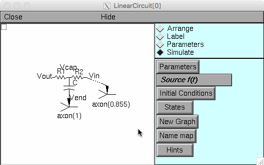
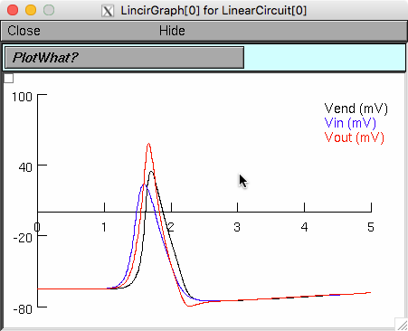

This is the readme for a NEURON simulator model associated with the paper:
Chandler WK, Hodgkin AL (1965) The effect of internal sodium on
the action potential in the presence of different internal
anions. J Physiol 181:594-611
This model was contributede by Michael Hines who created the model in
collaboration with John Moore. NEURON is required to run this model
and is freely available at http://www.neuron.yale.edu
The model demonstrates the "cannula artifact" discussed in the paper
(see Fig 5 in the paper and it's corresponding linear circuit model

displayed when you run the model in this archive). The artifact makes
it appear as though you are recording an Action Potential voltage greater
than the sodium (Na+) reversal potential when this shouldn't be
possible.
Model usage: either auto-launch from modeldb or download and extract
this archive and start with the mosinit.hoc. For more help on starting the model see:
https://senselab.med.yale.edu/ModelDB/NEURON_DwnldGuide.cshtml
Once the model starts it completes quickly and generates a graph:

where the red trace shows a recorded action potential reaching 58
volts while ena=50 thus demonstrating the cannula artifact (see
figure 8 b bottom's 3mm similar AP).